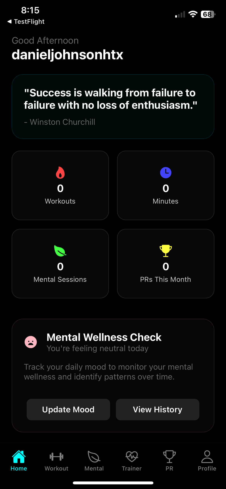
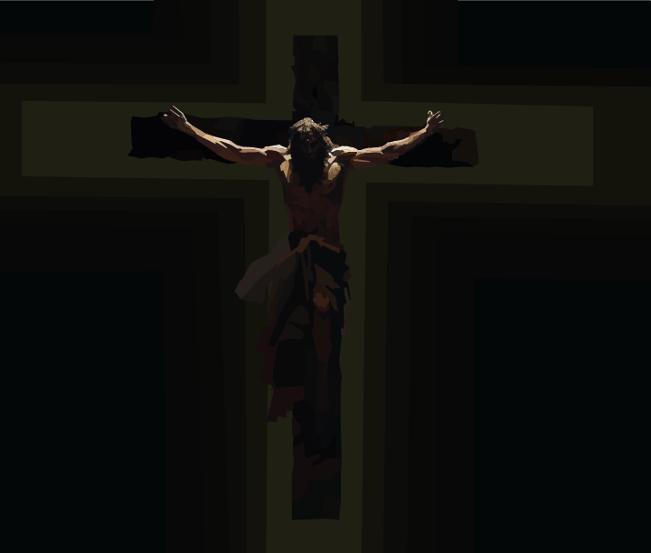

Here's a portfolio of my current and past projects.
Neuroscience & Neuroethics Research ‐ Leadership Initiatives, Summer 2026
Selected for the Advanced Medical Neuroscience Internship, where I worked alongside researchers and faculty at Georgetown University on neuroscience and neuroethics.
My ethical investigation examined gut dysbiosis-driven inflammation and its potential role in the development of Parkinson's disease through the vagal pathway. I reviewed the literature on gut dysbiosis, alpha-synuclein misfolding, and Parkinson's pathology, then built a framework for conducting a holistic ethical review as that research advances. The analysis considered how inflammatory metabolites and LPS produced in the gut may contribute to alpha-synuclein misfolding in enteric neurons, and how human stem cell-derived Gut-Brain Vagal Pathway Assembloids could help establish that relationship, while weighing informed consent, participant privacy, demographic representation, and the ethics of increasingly complex neural organoids.
I presented the work to a panel including Dr. James Giordano, Chief of Georgetown University's Neuroethics Studies Program, and Dr. Rachel Wurzman, a Dana Foundation Fellow in Neuroscience and Society.
The internship also included fMRI work at Georgetown's Center for Functional and Molecular Imaging with Dr. Ashley VanMeter, transcranial direct current stimulation and neuromodulation in Dr. Adam Green's Laboratory for Relational Cognition, a hands-on brain dissection with Professor Tatyana Kliorina, and a session on movement disorders with Dr. Fernando Pagan.
Full Research Page
Better U LLC ‐ Co-Founder, 2025 to Present
Better U LLC is a company I co-founded with two others to build technology for personal development. We handle product, engineering, and operations ourselves, from early design through App Store release.
BetterU ‐ AI Self-Improvement App, January 2025 to Present

BetterU is a cross-platform iOS and Android app that pairs fitness tracking with mental wellness in one place, built with React Native and Expo on a Supabase backend.
The app covers guided workouts and training plans, mental wellness sessions with mood history and session summaries, an AI trainer that gives users in-context coaching, and a social layer with friends, groups, and a shared activity feed. I work primarily on late-stage development and release, including the TestFlight builds and App Store submission.
App Website
Public TestFlight Beta
CogTrack ‐ Cognitive Baseline Screener (In Development)
CogTrack is a mobile app I am building that runs short daily cognitive tests, one to three minutes each, and charts how your own results trend over time. It is written in React Native and TypeScript on Expo, with Supabase and on-device storage.
Three tests are working so far. A reaction time task measures mean response speed and variability across ten trials. A Go/No-Go task measures inhibitory control across twenty trials through commission and omission errors. A three-minute SART task measures sustained attention by tracking whether reaction time variability rises in the second half of the task, which is the vigilance decrement. Results are stored locally, one session per day, and plotted on a trends chart.
Working memory and interference tests are the next ones to build, along with baseline normalization and data export.
CogTrack is a self-tracking tool for personal pattern awareness. It is not a diagnostic or clinical instrument.
Christ Crucifixion Using the Pen Tool (Adobe Illustrator) ‐ November 2024

For a semester of Digital Graphics covering Adobe Illustrator and Photoshop, we were assigned to build an art piece entirely with the pen tool. We could choose any photo for reference, and I settled on a depiction of Christ on the crucifix. This is the product of that project.
Around the Web
Other sites I have built or been featured on.
BetterU ‐ the product site for the BetterU app.
betteruai.com
Better U LLC ‐ the company site for Better U LLC, covering the team and our policies.
betterullc.com ‐ currently offline
Vote Daniel Johnson ‐ the campaign site I built for my run for House Council President at Strake Jesuit, under the slogan "Leading With Faith. A Voice For Every Crusader." It carried my platform, a Q&A page where students could ask me questions directly, and a feature that let supporters sign their name onto the page.
pickdaniel.com
Leadership Initiatives ‐ my research page from the Advanced Medical Neuroscience Internship.
li2026.org